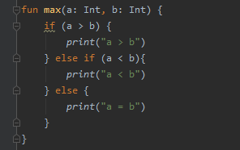

小狮子的Kotlin学习之路（六）
Kotlin条件控制
没有一条可以一直走到底的路，有时候必定需要面临各种选择。做选择的时候，当然是有一定的原因或者条件的。应用程序也是一样，我们需要根据不同的条件，让程序执行不同的代码或输出不同的结果。
举个栗子，我们给定两个数值 a 和 b ，我们需要得到数值较大的结果。
我们用语言描述时：如果给定数值 a 和 b， 如果 a 大于 b ，结果为 a ，如果 a 小于 b ,结果为 b。那我们用程序描述给计算机，让计算机给我们算出结果呢。
这里我们就需要用到条件控制，在Kotlin中的条件控制有if 和when。
如题，我们用Kotlin来实现比较大小的计算，看下面这段程序：
xxxxxxxxxxfun max(a: Int, b: Int) { if (a > b) { a } else { b }}这段程序用一个函数，实现了比较大小并返回较大值。在Kotlin中，if的基本用法为if - else。而有时候，我们仅需要一个条件时，我们可以省略else。而还有一种写法，当条件语句较短时，在规范性允许的情况下，可以写作一行，省略{}，但如果一行书写较长，影响阅读时，建议最好不要省略。例如我们重写上面这个函数：
xxxxxxxxxxfun max(a: Int, b: Int) { if (a > b) a else b}当然了，这个函数还有更简洁的方式，使用表达式函数：
xxxxxxxxxxfun max(a: Int, b: Int) = if (a > b) a else b另外，我们也可以使用if表达式直接将if表达式的结果赋值给一个变量。
xxxxxxxxxxval max = if (a > b) a else b聪明的同学肯定想到了，如果多个条件该怎么写呢？
方法当然是有的，if - else条件可以拼接多个条件，其写法为：
if - else if -...- else，最后的else不是必须的，但是当条件大于两个时，最好加上else分支。
xxxxxxxxxxfun max(a: Int, b: Int) { if (a > b) { print("a > b") } else if (a < b){ print("a < b") } else { print("a = b") }}边学边练，才能让学习的东西有更深的记忆。
我们在IDEA中输入这个函数：

细心的你，是否会有所发现？
在if下面，有一根黄色的波浪线。其实，我们利用编译器的好处就体现出来了，我们看看这个波浪线所提示的它是什么。
看到这行提示了吧，它的意思是：级联if应替换为when。那when是什么呢？
when也是一个条件控制关键字，意思是但满足对应的条件时，执行对应的语句。来看下面这段程序：
xxxxxxxxxx when { a > b -> { print("a > b") } a < b -> { print("a < b") } else -> { print("a = b") } }这里的when表达式的作用和if - else if - else的作用一样。
这只是用来替代级联if条件语句的一种写法。比较正式的when写法为：
xxxxxxxxxx when (a) { 10 -> { print("a = 10") } 100 -> { print("a = 100") } else -> { print("No matched.") } }和if一样，在->符号后， 如果仅有一个表达式，则可以省略{}。
xxxxxxxxxx when (a) { 10 -> print("a = 10") 100 -> print("a = 100") else -> print("No matched.") }另外，when表达式的条件分支也可以合并，比如：
xxxxxxxxxx when (a) { 10, 12 -> print("a = 10或a = 12") 100 -> print("a = 100") else -> print("No matched.") }来看一个例子：
xxxxxxxxxxfun match(a: Int) = when (a) { 10, 12 -> print("a = 10或a = 12") 12 -> print("a == 12") 100 -> print("a = 100") else -> print("No matched.")}在main函数中调用一下match函数
xxxxxxxxxxfun main() { match(12)}看一下执行结果：
我们输入了12，但是打印结果显示进入了第一个条件分支。也就是说，在when语句中，会将需要匹配的参数，按照条件顺序依次匹配，进入第一个匹配的条件分支。当所有条件均不匹配时，则会执行else分支。
我们来做一个实际的例子。
学期结束，我们需要归类一下本学期每位同学的成绩，归类方法为：A （score >= 90）、B（75 <= score < 90）、C（60 <= score < 75）、D（score < 60）。
接下来，我们使用when语句来实现我们的功能。当然了，if语句也是完全能够实现的，有兴趣的同学，可以自行尝试一下。
我们先定义一个函数
xxxxxxxxxxfun scoreClassify(score: Int): String { return when (score) { in 90..100 -> "A" in 75 until 90 -> "B" in 60 until 75 -> "C" else -> "D" }}首先，我们来看一下这个实现，是不是里面多了很多不认识的东西？
那我们来认识一下它们。首先，in 也是一个关键字，表示在某个区间内。..表示在某个区间，比如90..100表示90 到 100，包含 90 也包含 100。until也表示区间，但是包含起始不包含结尾，比如 75 until 90表示包含 75 但不包含 90。
我们也看到，方法有一个String类型的返回值，而实现方式是return了一个when表达式。当when作为表达式时，符合条件分支的返回值，就是when表达式的返回值。
结合表达式函数和Kotlin的类型推断，可以将我们的函数进一步简化：
xxxxxxxxxxfun scoreClassify(score: Int) = when (score) { in 90..100 -> "A" in 75 until 90 -> "B" in 60 until 75 -> "C" else -> "D"}我们来验证一下我们的函数。
xxxxxxxxxxfun main() { val score1 = 75 val classify1 = scoreClassify(score1) println(classify1) val score2 = 99 val classify2 = scoreClassify(score2) println(classify2)}这里要说明的是println也是一个Kotlin的库函数，和print不同的是，输出内容后，会自动添加一个换行符。我们也看到输出B、A后，换了一行。Kotlin的库函数非常丰富，在学习过程中，我们将逐渐接触到更多的库函数。
至此，我们条件控制的内容基本就学完啦，最后，我们来考虑一个场景。
我们的成绩归类的函数，每个条件语句中，都是一个字符串类型的值，如果我们把其中一个字符串值改成其他类型，是否能够正常执行呢？
比如，我们将else分支中的结果，修改为返回不及格的成绩，我们来试一下
xxxxxxxxxxfun scoreClassify(score: Int) = when (score) { in 90..100 -> "A" in 75 until 90 -> "B" in 60 until 75 -> "C" else -> score}我们来输入输入一个不及格的成绩，看能否同我们预期。
xxxxxxxxxxfun main() { val score = 59 val classify = scoreClassify(score) print(classify)}我们看到，也是能够正常执行的，这是因为在这里，Kotlin类型自动推断，将函数返回值推断为Any类型。
那如果我们给函数加上返回值类型为String呢，会是什么样的情况呢？我们来试验一下。

结果是，我们就不能这样做了，因为我们限定了函数的返回值只能是String类型，所以不能返回一个Int类型的结果。
但是，当我们的when作为语句时，我们的每个分支可以是任意的返回值。这个可以自己尝试一下哦。
PS: 有需要一起交流学习的，可以微信关注公众号"VKTang工作室"或添加QQ群https://jq.qq.com/?_wv=1027&k=5z59aPs